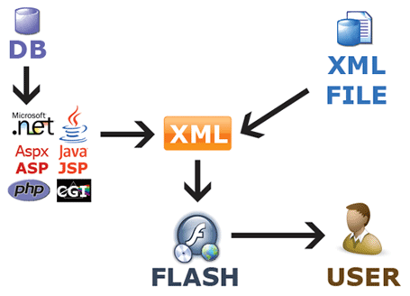

Definiciones
Lenguaje de marcas: Un lenguaje de marcado o lenguaje de marcas es una forma de codificar un documento que, junto con el texto, incorpora etiquetas o marcas que contienen información adicional acerca de la estructura del texto o su presentación. El lenguaje de marcas más extendido es el HTML
Los lenguajes de marcado suelen confundirse con lenguajes de programación. Sin embargo, no son lo mismo, ya que el lenguaje de marcado no tiene funciones aritméticas o variables, como poseen los lenguajes de programación. Históricamente, el marcado se usaba y se usa en la industria editorial y de la comunicación, así como entre autores, editores e impresores.

Sistemas de gestión de información: Los gerentes utilizan un sistema de gestión de información para crear informes que les proporcionen una visión completa de toda la información que necesitan para tomar decisiones que van desde pequeños detalles diarios hasta una estrategia de nivel superior. Los sistemas actuales de gestión de la información se basan en gran medida en la tecnología para recopilar y presentar datos, pero el concepto es más antiguo que las tecnologías informáticas modernas.
ERP: Los sistemas de planificación de recursos empresariales son los sistemas de información gerenciales que integran y manejan muchos de los negocios asociados con las operaciones de producción y de los aspectos de distribución de una compañía en la producción de bienes o servicios.
Los sistemas ERP típicamente manejan la producción, logística, distribución, inventario, envíos, facturas y contabilidad de la compañía de forma modular.1 Sin embargo, la planificación de recursos empresariales o el software ERP puede intervenir en el control de muchas actividades de negocios como ventas, entregas, pagos, producción, administración de inventarios, calidad de administración y la administración de recursos humanos.2
Los ERP funcionaban ampliamente en las empresas. Entre sus módulos más comunes se encuentran el de manufactura o producción, almacenamiento, logística e información tecnológica, incluyen además la contabilidad, y suelen incluir un sistema de administración de recursos humanos, y herramientas de mercadotecnia y administración estratégica.

Caracteristicas
HTML: El HTML se escribe en forma de «etiquetas», rodeadas por corchetes angulares (<,>,/). El HTML también puede describir, hasta un cierto punto, la apariencia de un documento, y puede incluir o hacer referencia a un tipo de programa llamado script, el cual puede afectar el comportamiento de navegadores web y otros procesadores de HTML.8
HTML también sirve para referirse al contenido del tipo de MIME text/html o todavía más ampliamente como un término genérico para el HTML, ya sea en forma descendida del XML (como XHTML 1.0 y posteriores) o en forma descendida directamente de SGML (como HTML 4.01 y anteriores). HTML consta de varios componentes vitales, entre ellos los elementos y sus atributos, tipos de data y la declaración de tipo de documento.CSS: El modo de funcionamiento de las CSS consiste en definir, mediante una sintaxis especial, la forma de presentación que le aplicaremos a los elementos de la página. Podemos aplicar CSS a muchos niveles, desde un sitio web entero hasta una pequeña etiqueta. Con CSS podemos definir la distancia entre líneas del documento o podemos colocar elementos en la página con mayor precisión sin errores.
Una ventaja importante de CSS es la capacidad de espeficiar las medidas con diversas unidades. Si HTML tan sólo podíamos definir atributos en las páginas con pixeles y porcentajes, ahora podemos definir utilizando muchas más unidades como: pixeles, pulgadas, puntos, centimetros, etc.

XHTML: XHTML se utiliza para marcar contenido como texto, imágenes y enlaces en forma de hipervínculos para crear una cierta estructura que puede ser mostrada por los navegadores. Los documentos pueden ser estructurados con XHTML para hacerlos legibles para un analizador. El analizador interpreta los elementos de marcado especificados en las definiciones del lenguaje XHTML y reproduce el contenido de estos elementos de una manera específica.
En última instancia, el usuario ve lo que contienen estos elementos y no la forma en que se anotan o estructuran los elementos. Este último se llama código fuente XHTML y puede ser editado con diferentes editores de texto, por ejemplo, con un editor WYSIWYG. La notación separa el contenido y el diseño. El contenido está encerrado por los elementos. La forma en que se muestra este contenido está determinada por los elementos y sólo la muestra el navegador.XML: la mejor característica de XML reside en su diseño, el cual ha sido enfocado desde un principio para asegurar un excelente desempeño, simplicidad de implementación y sencillez de uso en servicios de la web, logros que alcanzó con absoluto éxito, sobre todo en el ámbito de la publicación de medios electrónicos a gran escala. Para conseguir este objetivo, fue fundamental que el formato elegido fuera el de texto, hecho que posibilita que el contenido de los documentos XML sea entendible tanto para las personas como para los dispositivos.
Otras características de los documentos XML es que tanto la estructura como el diseño están completamente separados, permite exportar los datos contenidos a otros formatos como por ejemplo HTML, PDF, RTF y otros, además una función fundamental es la de poder compartir datos entre diferentes sistemas y plataformas, como por ejemplo páginas web y bases de datos. Asimismo, el estándar XML usa reglas de generación de datos concretas con el objetivo de que los documentos puedan ser procesador sin inconvenientes ni problemas de compatibilidad por múltiples sistemas.
Markdown: Markdown trata de conseguir la máxima legibilidad y facilidad de publicación tanto en su forma de entrada como de salida, inspirándose en muchas convenciones existentes para marcar mensajes de correo electrónico usando texto plano.
Markdown convierte el texto marcado en documentos XHTML utilizando html2text creado por Aaron Swartz. Markdown fue implementado originariamente en Perl por Gruber, pero desde entonces ha sido traducido a multitud de lenguajes de programación, incluyendo PHP, Python, Ruby, Java y Common Lisp.
XPATH: Todo el procesamiento realizado con un fichero XML está basado en la posibilidad de direccionar o acceder a cada una de las partes que lo componen, de modo que podamos tratar cada uno de los elementos de forma diferenciada. XPath en sí es un lenguaje sofisticado y complejo, pero distinto de los lenguajes procedurales que solemos usar (C, C++, Basic, Java...). Además, como casi todo en el mundo de XML, aún está en estado de desarrollo, por lo que no es fácil encontrar herramientas que incorporen todas sus funcionalidades.
XQUERY: XQuery proporciona los medios para extraer y manipular información de documentos XML, o de cualquier fuente de datos que pueda ser representada mediante XML como, por ejemplo, bases de datos relacionales o documentos ofimáticos. utiliza expresiones XPath para acceder a determinadas partes del documento XML. Añade, además, expresiones similares a las usadas en SQL, conocidas como expresiones FLWOR. Las expresiones FLWOR toman su nombre de los 5 tipos de sentencias de las que pueden estar compuestas: FOR, LET, WHERE, ORDER BY y RETURN. También incluye la posibilidad de construir nuevos documentos XML a partir de los resultados de la consulta.
El lenguaje se basa en el modelo en árbol de la información contenida en el documento XML, que consiste en siete tipos distintos de nodo: elementos, atributos, nodos de texto, comentarios, instrucciones de procesamiento, espacios de nombres y nodos de documentos.